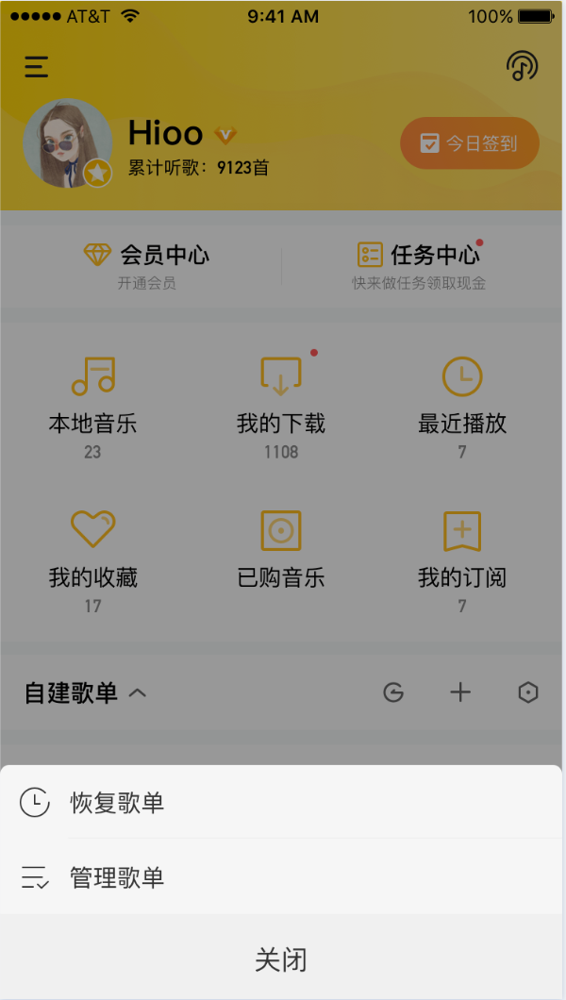

需求描述
-入口页
1、外部主入口：
自建歌单的操作区域，最右边原【批量操作歌单】按钮变为【管理歌单】
2、入口交互：
点击管理歌单按钮后，底部出现浮层，包括【恢复歌单】【管理歌单】两个功能入口。
点击【管理歌单】则去到原有的歌单管理页面即可。
点击【恢复歌单】去到这期新开发的恢复歌单页
-【恢复歌单】功能页面
页面功能包括：全选、歌单展示、恢复歌单
点击逻辑：点击歌单，则选择该歌单
恢复逻辑：
1、当用户对歌单执行删除操作时，记录下该歌单的数据，保存一个月时间，用户在删除后的一个月内，可以来此页面，对歌单进行恢复。
2、当用户在歌单中对于单曲执行删除操作后，记录下该歌单的数据，保存一个月内所有删除过的歌曲，用户在一个月内，可以来此页面，对歌单中的歌曲进行恢复。（Q：重复歌曲怎么办）
页面中相关数据规则

数据

规则
备注

被删除的歌单
若歌单是被完全删除的，则展示在列表中，并标注为：歌单被删除

若用户先执行删除歌曲，然后执行删除歌单的操作，则只保留删除歌单这一项

歌单删除时间

歌单/歌单内歌曲最后一次删除操作的日期（服务端记录）
需求背景
工具化需求调研过程中，针对用户自建歌单管理这一块，发现与各大竞品对比，都缺失一个重要功能——歌单/歌单内歌曲误删的恢复功能。
从用户角度，歌单/歌单内歌曲误删，这是一个大概率事件，而当发生此种情况时，当前我们的app没有给用户提供任何兜底方案，故而该需求优先级较高。



28首歌曲被删除 8月22日
歌单被删除 8月21日
1首歌曲被删除 8月20日